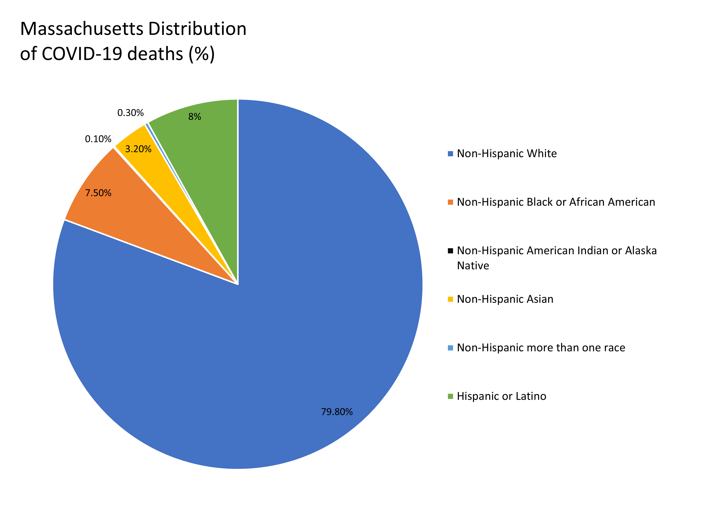

CDC Weekend Reporting
From what can be observed in the above plots of new daily COVID-19 cases and deaths in Massachusetts, it appears that of late October 2021, the CDC has
stopped recording new deaths and cases on the weekend and federal holidays. On those days, they instead report that there are 0 new deaths and cases.
NOTE (07/09/2022) - Total count of COVID-19 deaths goes from 23,751 on March 13th, 2022 down to 19,981 on March 14th, 2022 (dip can be seen in plot above). Reason for decrease in total number is unknown, reached out to dataset owner Brian Lee.
Visualization and analysis of new COVID-19 cases throughout the different towns and counties in Massachusetts. Dataset includes daily and weekly new positive infections and cumulative sums since the start of the pandemic for each of the 14 Massachusetts counties. Visualization is also done for COVID-19 case count data taken for all 50 states, as well as cases by age group and vaccination status.
Massachusetts's data was collected from August 19th, 2020 to June 17th, 2022 for the daily dataset, and December 6th, 2020 to June 11th, 2022 for
the weekly dataset. Taken from the Archive of COVID-19 cases in Massachusetts in the Mass.gov website. Original data was extracted by the
Massachusetts Department of Public Health (DPH).
MA data:
https://www.mass.gov/info-details/archive-of-covid-19-cases-in-massachusetts
Nationwide data is extracted from the CDC data repository, which ranges from January 22nd, 2020 to June 16th, 2022.
Nationwide data:
https://data.cdc.gov/Case-Surveillance/United-States-COVID-19-Cases-and-Deaths-by-State-o/9mfq-cb36/data
Cases per Age Group and Vaccination Status data:
https://data.cdc.gov/Case-Surveillance/United-States-COVID-19-Cases-and-Deaths-by-State-o/9mfq-cb36/data
Deaths per Race and Etnicity:
https://data.cdc.gov/NCHS/Provisional-COVID-19-Deaths-Distribution-of-Deaths/pj7m-y5uh